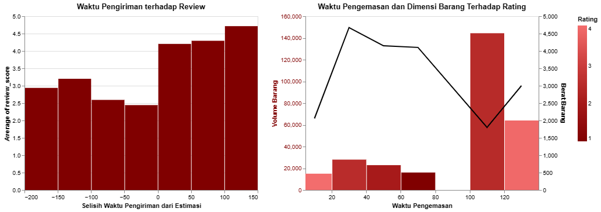

Para penjual tentu sering dihadapkan pada pilihan keputusan untuk mengoptimalkan penjualan.
Pengambilan keputusan yang keliru bukan hanya menjauhkan penjual dari target penjualan namun pemborosan
waktu dan juga uang. Urgensi
dari
pengambilan keputusan yang tepat untuk diambil penjual maka perlu melalakukan analisis dengan basis data
yang tepat.
Histori atau riwayat dari data transaksi konsumen dari platform jual-beli online bisa menjadi sumber
informasi yang
berguna untuk digunakan oleh penjual untuk melakukan analisnya terhadap prilaku pembelian dari konsumen.
Salah satu upaya dari stategi penjualan dan pemasaran adalah menarik konsumen baru dan mempertahankan
konsumen yang
sudah ada. Beragam faktor yang mempengaruhi pola pembelian dari konsumen bisa dicari melalui data histori
transaksi
konsumen. Beragam faktor seperti harga, review produk, dan review dari pelayanan bisa mempengaruhi pembelian
konsumen.
Prilaku dari konsumen dari riwayat penjualan pun dapat dilihat dari pembelian berulang, review yang
diberikan, dan
jumlah order dan barang yang sering dibeli setiap kali pembelian.
Untuk menganalisis pola prilaku konsumen dan beragam pengaruhnya, terdapat objektif dari analisis yang akan
dilakukan
terhadap riwayat transaksi konsumen.
Data transaksi dari tahun 2016 terhadap pertumbuhan konsumen dan banyaknya transaksi menunjukan kenaikan. Walaupun kenaikan tidak konsisten dan mengalami naik turun, namun trend dari data menunjukkan kenaikan. Untuk nilai dari rating yang diberikan oleh konsumen menunjukkan rating paling banyak ada di angka 4
Analisis konsumen dilakukan untuk melihat pola pembeliannya. Seperti kapan kali terakhir konseumen datang, seberapa sering konsumen membeli produk dan berapa uang yang sudah diberikan konsumen kepada penjual. Dari analisis data transaksi menunjukkan semua konsumen yang ada merupakan konsumen baru. Tidak ada konsumen yang melakukan lebih dari satu kali transaksi. Apabila dilihat dari grafik di atas konsumen baru cenderung untuk membeli barang dengan jenis item dan total item yang tidak banyak. Kebanyakan hanya membeli satu jenis barang dengan satu pembelian. Namun memang harga yang dikeluarkan untuk barang tersebut beragam. Untuk Nilai moneter konsumen atau uang yang dikeluarkan konsumen kebanyakan masih di bawah $200.
karena tidak ada pembelian berulang yang artinya semua konsumen adalan konsumen baru. Di
sini saya ingin
melihat bagaimana performan dari penjual dalam melayani konsumen dapat memberikan pengaruh terhadap
penilaian konsumen.
poin yang akan saya lihat adalah kecepatan pengemasan barang dan kecepatan pengiriman. Kecepatan pengemasan
dapat dilihat dari
waktu yang diperlukan oleh penjual mulai dari pesanan telah terverifikasi sampai barang dikirim. Kecepatan
pengiriman tentu tergantung Dari
lokasi penjual dan pembeli. oleh karena itu untuk melihat kecepatan pengiriman akan dilihat dari selisihnya
estimasi pengiriman dan waktu real yang diperlukan dalam
pengiriman barangnya.

Terlihat dari grafik kecepatan pengiriman, apabila selisih dari estimasi ke arah positif, artinya pesanan
datang lebih cepat, maka rating dari konsumen semakin
baik. Artinya ada pengaruh dari kecepatan pengiriman terhadap rating yang diberikan konsumen. Untuk yang
bernilai negatif artinya lebih lama dari estimasi
pengiriman maka nilai rating konsumen malah turun dan nilanya dibawah 3,5.
Pada kecepatan pengemasan barang, banyak faktor yang dipertimbangkan karena dimensi dan bobot dari barang
yang dipesan beragam sehingga pengemasan pun bergantung pada faktor-faktor tersebut.
Untuk barang dengan dimensi yang besar walaupun kecepatan pengemasan lama, konsumen masih memberi rating
yang bagus. Tapi barang dengan dimensi yang kecil, lamanya kecepatan pengemasan sangat mempengaruhi rating
dari konsumen.
Pembelian konsumen terhadap barang tertentu bisa menjadi pertimbangan produk mana yang lebih laku di pasaran dan menghasilkan benyak keuntungan pada penjual dibandingkan barang lainnya. Berikut ini adalah sepuluh produk dengan penjualan terbaik berdasarkan histori transaksi konsumen.